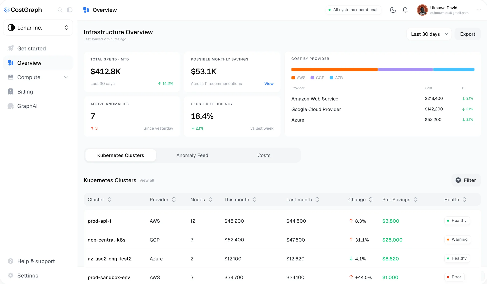

CostGraph.ai
Teams lose track of what they're spending on Kubernetes and VMs. CostGraph shows that spend and tells you what to fix first.
CostGraph
Cloud savings you can act on

Intro
If you run Kubernetes, you already have every metric you could ever want. What you don't have is an answer to "what do I fix first?", and that's the one question CostGraph exists to answer.
We started with interviews. DevOps and platform engineers told us what their tools got wrong, what they actually looked at, and what they skipped past every single time. Those conversations shaped the product more than any competitor audit did, and most of them came down to the same thing: they didn't need more charts, they needed to know which number to act on.
My role
I joined in 2025 and lead design on the team building CostGraph. I set the direction and look after the design system, from the tokens in Figma to the React those designs turn into, which I write.
I work fast and early in code. Claude and v0 get me through layout and flow ideas quickly, then I prototype against real backend exports rather than placeholder data, and Figma comes last, for refining what already survived real numbers. When the data is real you stop designing for states that never happen and start designing for the ones that do.
Design system
Dense technical screens go wrong when every visual decision gets made on the spot. So the system came first: tokens, components and motion rules, designed as primitives that extend and combine instead of getting rebuilt per screen. It ships as its own package, @costgraph/ui, and the app imports it like any other dependency.
Colour carries meaning and nothing else. A warning, an inefficiency and a healthy resource each have their own treatment, and nothing gets a colour just to look nice, so when something on the screen is orange it's because you should look at it.
One axis for anything you provision
The clearest example is how we show whether something is the right size. Every persistent volume, VM and node has the same question behind it: you paid for this much, you're using this much, and we think you need this much. So instead of three separate numbers there's one track. It runs from zero to what you provisioned, green fills to our recommendation, and orange fills to what you actually use, with a tick on each.
Because that question is the same for any provisioned resource, the slider lives in the shared package rather than on one page. Its labels drop to a second row when they'd collide, which turns out to be the normal case, since the recommendation is worked out from usage and the two usually sit close together.
GraphAI
GraphAI is our LLM tool for cost analysis. Most AI features in products live on their own page: you go there, ask something, and come back without the context you were asking about. The hard part here was showing what the agent is actually doing without burying the simple version of the screen under it.
On a wide screen the panel docks beside the page and pushes the content over rather than covering it, so the thing your question is about stays on screen while you ask. Below 1024px there isn't room for both, so it falls back to an overlay.
When an answer mentions a page in the product, the link comes back as a pill that takes you straight there, so an answer is somewhere you can go rather than just text you have to trust. And small numbers stay readable. A chart that says $0 for something costing $0.0012 an hour is lying to you, so every GraphAI chart keeps two significant digits past the leading zeros.
Lessons
Clarity beats volume. Infrastructure teams can already see everything, so every screen I add has to earn its place by making the next decision easier, not by showing more.
Designing against real schemas changed how I decide things. The product got better the moment I stopped designing for the data I imagined and started designing for the data we actually had.
connect
I’m always up for talking to thoughtful people about design systems, interfaces, and the code they turn into. Reach me at shatermt@gmail.com, or find me on X and GitHub.